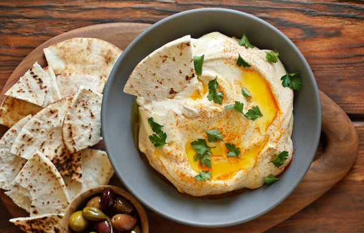

Home
Lets make some Hummus 😋.

Description
If falafel is Israel’s national dish, then hummus has to be a close
second. While we tend to think of it as a dip, in Israel hummus can play
any role – including a main meal in itself. Locals will all have their own
favourite places to get hummus, and it’s as talked about as anything else
in Israel, but any you try in the country will be far better than what you
get in British supermarkets. The basic combination of chickpeas, tahini,
garlic and lemon is tasty enough on its own, but there are many
variations. Some include cumin, many are sprinkled with sumac and others
are topped with pine nuts; there’s even hummus with fried ground meat on
top. It might sound a little strange, but hummus is traditionally eaten
with large slices of raw, sweet onion, which are dunked like a piece of
pitta – delicious.
Ingredients
-
Chickpeas(3 cups): Chickpeas, also known as garbanzo
beans, are the star ingredient in hummus. Canned or dry chickpeas? If
you're wondering how to make hummus from scratch--the best, extra
creamy, authentic stuff--you'll want to cook your own chickpeas from
scratch (you'll give them a good soak overnight + boil in water until
well-done. More on this later)
-
Garlic (1 or 2 cloves: Start with 1 clove and make sure
it is finely minced.Tip: to tame its pungency, allow minced garlic to sit in a little bit
of lemon juice for a few minutes.
-
Tahini (⅓ cup): Tahini is a rich, nutty and slightly
bitter paste made from toasted sesame seeds.
-
Fresh Lemon Juice (from 1 lemon): Fresh lemon juice is
just the thing to add tang here.
-
Kosher Salt: Just a pinch of kosher salt to your
liking. You can always add more. If you're interested in adding
-
Extra Virgin Olive Oil: A generous drizzle of quality
extra virgin olive oil is the way to finish and serve this dip the
authentic way.
-
Garnish: Not to be underestimated. My favorite way to
garnish a bowl of hummus, once the EVOO has been poured nicely right in
the middle, is a few pinches of tangy sumac (sometimes ground cumin is a
good addition). If you have some extra cooked chickpeas, plant them
right in the middle. For a pop of green, you can add a garnish of fresh
parsley.
How to Make Hummus: Step-by-Step
Time needed: 20 minutes.
-
Soak and cook the chickpeas:
If using dry chickpeas allow extra time for soaking (overnight) and
cooking (2 hours).
Take 1 cup dry chickpeas and place it in a large bowl. Add plenty of
water and soak overnight (chickpeas will expand in the bowl).
When ready, drain chickpeas and place them in a medium-sized heavy
cooking pot. Cover with water by about 2 inches.
Bring to a boil, then reduce heat and simmer for 1 ½ to 2 hours. You
should end up with about 3 cups of cooked chickpeas.
-
Peel the chickpeas: Cover the cooked chickpeas in hot
water and add 1 ½ teaspoon baking soda. Leave for a few minutes.
Take a handful of chickpeas and rub under running water to remove the
skins. Discard skins. Let the chickpeas cool completely before using.
-
Puree the chickpeas in a food processor: Dry the
chickpeas well then add them to the bowl of a large food processor
that's fitted with a blade.
Run the processor until the chickpeas turn into a smooth powder-like
paste
-
Add the rest and keep blending: While the food
processor is running, add 2 ice cubes, tahini, salt, and lemon juice.
Blend for about 4 minutes or so.
Check, and if the consistency is too thick still, run processor and
slowly add a little hot water. Blend until you reach desired silky
smooth consistency.
At this point, you can cover and refrigerate the hummus for an hour or
so before serving.
-
Transfer to a serving bowl and garnish: Spread in a
serving bowl and add a generous drizzle of good extra virgin olive oil.
Add a few chickpeas to the middle, if you like. Sprinkle sumac on top.
Enjoy with warm pita wedges and your favorite veggies and some warm pita
bread.